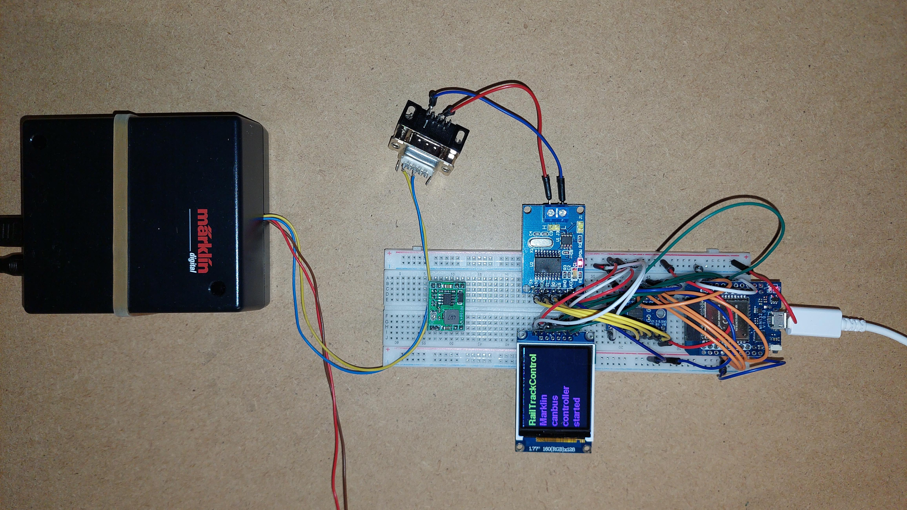
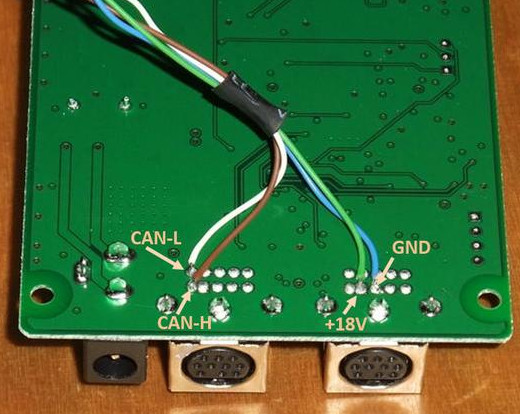

Setup Marklin Railbox Bridge
Under Construction
With the Marklin Railbox Bridge it is possible to control(by the graphical user interface) turnouts and locomotives over the railtarcks in the following (rail)protocols:
Marklin Motorola
DCC
mfx
Configuraion is done by the track_config.json file in the config directory of this repository. It is also posible to use the turnout controller to switch different kind of accessories. Note: The track config.json file is als used for the user interface. For the Bridge and the user interface they sould be the same.
 Example of prototyping the railbox
(New one wil follow soon) (In the future there wil be a dedicated PCB developed)
Connectiontable Railbox Bridge
Warning for the assambly/wireing:
Before connecting the output of the step-down converter to the rest of the system, adjust the output voltage to 5 Volts
Solder only in inner rows headers on the ESP32 device
Connections to the Marklin Railbox can be made by:
Soldering wires to the PCB of the Railbox, see image below
Connection by a 10 pin plug(I did not find a compliant plug on the internet)
 Connections to the Digital Connector Box PCB Reference
Programming instructions(Note: Select project ros2_marklin_canbus_controller)